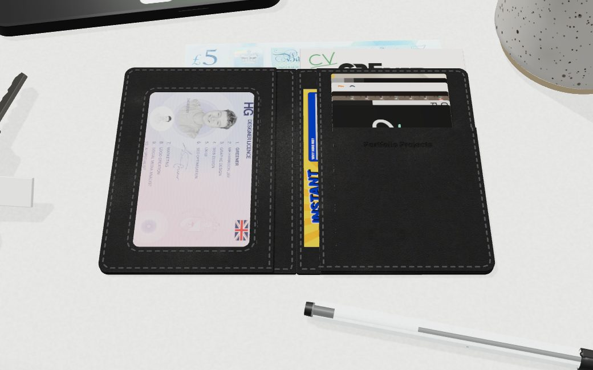
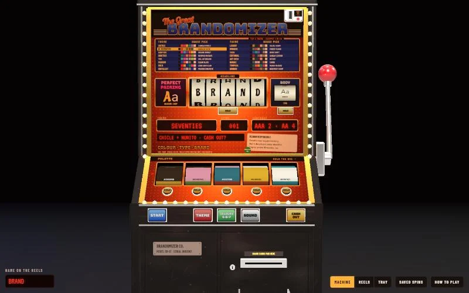
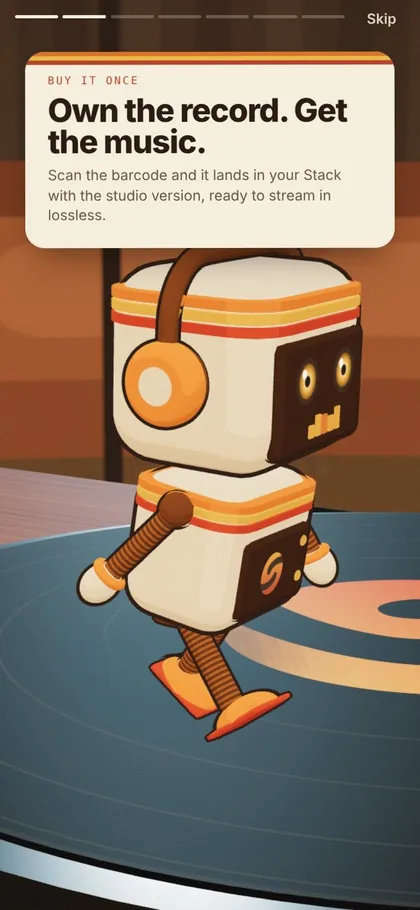

Immersive brand websites
A whole site built around one idea you can explore, so visitors remember the brand and share it.
- three.js
- WebGL
- Scroll and camera journeys
Interactive & 3D website design
I design and build interactive and 3D websites for brands that want to be remembered: sites you explore, switch on and pick things up in, that still load fast, work on phones and get found on Google.

A beauty studio's website as a vintage computer you switch on: a captcha intro, a working desktop and an avatar to customise, with 39 search-friendly pages underneath.

A real leather wallet you open in 3D, holding a designer licence, project cards, a receipt CV and a scratchcard. Its physical twin exists too.

A 3D fruit machine that spins colour palettes and font pairings, with real spinning reels, a jackpot and sounds made in the browser.

A record-collecting app with a 3D opening film and a DJ character, designed and prototyped end to end.
A whole site built around one idea you can explore, so visitors remember the brand and share it.
One striking page for a product, an album, an event or a drop, built to be talked about.
Let people turn a product round, change colours and options, and see exactly what they're buying.
Small interactive tools and games that do a job for the brand, like the Brandomizer or the MyFace avatar.
The 3D sits on top of proper HTML, so headings, text, links and structured data are all there for Google to read.
Phones get their own touch-first version and lighter textures. Machines that can't draw 3D well get a lighter scene, so nobody gets a frozen page.
The first screen appears straight away and the 3D follows, drawing only when something moves, so it stays smooth and easy on batteries.
We pin down the one idea the site is built around, and what you want visitors to do.
You get a rough version in the browser early, so you can click around it before we commit.
3D, interface, copy and search pages come together, with regular previews along the way.
Tested on phones and slower machines, set live, submitted to Google and handed over.
A 3D product viewer, a playful tool or a single launch page added to a site you already have.
A full site built around an interactive idea, with brand, 3D, search pages and a phone version, like MyFace.
Bigger campaigns, configurators and multi-part experiences, priced on a full quote after we talk.
Every project gets a fixed quote before anything starts. Larger projects are split into stages, with payment at each one. I'm not VAT registered, so there's no VAT to add on top.
A full interactive website usually comes to around £10,000. Smaller pieces, like a 3D product viewer or a single launch page, start from £3,000, and larger brand experiences are quoted on their own. You get a fixed quote before anything starts.
Yes. Every site I build has a phone version designed for touch, lighter textures for slower devices and a fallback for machines that can't draw 3D. MyFace, for example, turns its desktop computer into a flip phone on mobile.
Yes. The 3D sits on top of real pages with proper headings, text and links, plus structured data and a sitemap, so search engines can read everything. MyFace has 39 search-friendly pages behind its 3D computer.
Not if it's built carefully. The 3D loads after the first screen, draws only when something moves and scales its quality to the device, so the page appears quickly and stays smooth.
Yes. I can design and build the whole thing, or join your team for the 3D and front-end work on a project you're running.
A few lines about the brand, who it's for and what you want people to do or feel. I'll come back with questions, a concept and a fixed quote.
Tell me about the brand and what you want people to feel. A few lines is plenty, and I'll come back with questions, a concept and a fixed quote.